Guía para el Super Administrador, el Pastor, los Supervisores de Área, los Líderes y el equipo de apoyo de las Casas de Vida, y los Coordinadores de Formación.
Versión documentadaCommit d4b5cf7 de la rama main (18/11/2026)
Fecha del manual24 de noviembre de 2026
AutoresJoshua David Tarazona Gómez Karen Lizeth Arenas Medina
InstituciónUnidades Tecnológicas de Santander (UTS)
IglesiaComunidad Cristiana Manantial de Gracia (CCMG), Girón
Datos de las imágenesEntorno de demostración con personas y valores ficticios
1.Propósito del manual
La plataforma web del Plan Vida Abundante (PVA) ayuda a la Comunidad Cristiana Manantial de Gracia de Girón a acompañar a las personas que llegan a la iglesia. Reemplaza las planillas en papel y en Excel por un solo lugar donde cada responsable registra y consulta la información que le corresponde.
Tiene dos módulos independientes:
Casas de Vida: áreas y Casas de Vida, personas nuevas, reporte semanal de asistencia, seguimiento, reportes y ofrendas.
Escuelas de Formación: procesos de formación, participantes e inscripciones, actividades con su asistencia, seguimiento y reportes.
Este manual explica, rol por rol, cómo hacer las tareas de todos los días: dónde empezar, qué botones pulsar, qué campos llenar y qué confirma la plataforma al terminar. Las imágenes son del entorno de demostración: los nombres, teléfonos y valores son ficticios.
En el texto, los botones aparecen resaltados en verde, los campos subrayados y las opciones del menú en verde. Los campos marcados con * en la plataforma son obligatorios.
2.Acceso a la plataforma
Dirección: la plataforma todavía no está publicada en Internet. En la instalación local se abre en http://127.0.0.1:8000[Por confirmar: dirección web definitiva cuando se publique].
Dispositivos: funciona en el navegador de un computador (Edge, Chrome o Firefox) y del celular. No hay que instalar ninguna aplicación.
Cuenta: solo se puede entrar con una cuenta creada por el Super Administrador o el Pastor. No existe registro abierto: si usted necesita una cuenta, pídala a uno de ellos.
Al abrir la dirección aparece la página pública de la iglesia, con información de las Casas de Vida y los horarios. Desde allí se entra con Iniciar sesión.
Figura 1. Página pública de la iglesia; el acceso para líderes está arriba a la derecha.
3.Roles y permisos
Cada cuenta tiene un solo rol. El rol decide qué módulo se abre al entrar, qué opciones aparecen en el menú y qué datos se ven: un Supervisor solo ve las Casas de Vida de su Área, y un Líder solo la suya.
Rol
Módulo
Qué puede hacer
Super Administrador
Los dos
Todo lo del Pastor y además la Auditoría (quién hizo qué y cuándo). Crea, edita y desactiva cuentas de cualquier rol.
Pastor
Los dos
Crea Áreas y Casas de Vida, importa datos, consulta personas nuevas y asistencia de toda la iglesia, registra seguimientos, genera reportes, registra ofrendas y gestiona usuarios.
Supervisor de Área
Casas de Vida
Consulta las Casas de Vida de su Área, sus personas nuevas, asistencia y seguimientos; revisa los reportes semanales y envía al Pastor el reporte general del mes.
Líder de Casa de Vida
Casas de Vida
Llena el reporte semanal de asistencia, registra personas nuevas y consulta los reportes y seguimientos de su Casa de Vida.
Apoyo de Casa de Vida (aprendiz, anfitrión o maestro de niños)
Casas de Vida
Ayuda al Líder: llena el reporte semanal y registra personas nuevas de la Casa de Vida a la que está asignado.
Coordinador de Formación
Escuelas de Formación
Crea procesos de formación, inscribe participantes, registra actividades con su asistencia, registra seguimientos y genera reportes de formación.
Ofrendas: además del Pastor, puede registrar ofrendas cualquier cuenta que el administrador marque como Autorizado como responsable de ofrendas.
Menú de cada rol en Casas de Vida:
Pastor:Inicio · Personas nuevas · Casas de Vida · Áreas · Importar datos · Asistencia · Seguimiento · Reportes · Usuarios · Ofrendas · Mi perfil. El Super Administrador ve además Auditoría.
Supervisor y Líder:Inicio · Personas nuevas · Casas de Vida · Asistencia · Seguimiento · Reportes · Mi perfil.
Escuelas de Formación:Inicio · Procesos de formación · Participantes · Actividades y asistencia · Seguimiento · Reportes · Mi perfil, más Usuarios, Ofrendas y Auditoría según el rol.
4.Iniciar sesión y recuperar la contraseña
Iniciar sesión
1
En la página pública, pulse Iniciar sesión.
2
Escriba su correo (o su nombre de usuario, si tiene uno) en Usuario o correo y su clave en Contraseña. Ejemplo ficticio: maria.lider@iglesia.example.
3
Pulse Ingresar.
Resultado: el Pastor y el Super Administrador llegan a «Selecciona un módulo»; los demás roles entran directo al panel de su módulo.
Figura 2. Inicio de sesión.
Si escribe mal la contraseña 5 veces seguidas, la cuenta se bloquea durante 15 minutos. Durante ese tiempo la plataforma muestra «Usuario o contraseña incorrectos.» aunque la contraseña sea la correcta.
Primer ingreso: si el administrador marcó que debe cambiar la contraseña, la plataforma lo lleva a «Cambiar contraseña» y no lo deja seguir hasta cambiarla.
Inactividad: la sesión se cierra sola tras 30 minutos sin usar la plataforma. Para salir antes, pulse Cerrar sesión en el menú lateral.
Recuperar la contraseña
1
En la pantalla de inicio de sesión, pulse ¿Olvidaste tu contraseña?
2
Escriba el correo de su cuenta en Correo electrónico y pulse Enviar enlace.
Resultado: aparece «Revisa tu correo». Si el correo está registrado, llega un mensaje de CCMG Girón con un enlace que vence en 60 minutos y sirve una sola vez.
3
Abra el enlace del correo, escriba la nueva contraseña dos veces y pulse Guardar nueva contraseña.
Resultado: «¡Contraseña actualizada!» y llega un correo de confirmación. Pulse Iniciar sesión para entrar con la nueva.
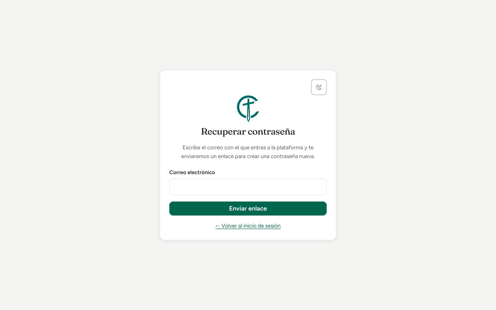
Figura 3. Solicitud del enlace para recuperar la contraseña.
Si el correo no llega, revise la carpeta de spam o solicite otro enlace con ¿No llegó? Solicitar otro enlace. Por seguridad, la plataforma responde lo mismo aunque el correo no esté registrado.
Mi perfil: corregir el nombre y cambiar la contraseña
Abra Mi perfil en el menú lateral. Allí se ven su Nombre completo, su rol y el módulo.
Corregir el nombre: edite Nombre completo y pulse Guardar cambios. Resultado: aparece «Nombre actualizado.» y el nombre nuevo se ve de inmediato en la barra superior. El rol y el módulo solo los puede cambiar el administrador.
Cambiar la contraseña: pulse Cambiar contraseña. Llene Contraseña antigua, Contraseña nueva y Contraseña nueva (confirmación) y pulse Cambiar contraseña. La plataforma lo devuelve a su panel y le envía un correo de confirmación.
La contraseña debe tener al menos 15 caracteres; una frase fácil de recordar funciona bien, por ejemplo «mi casa de vida se reúne el jueves» (ficticia).
5.Cómo se organiza la pantalla
Selector de módulo (Pastor y Super Administrador)
Muestra dos tarjetas: Casas de Vida y Escuelas de Formación. Pulse Ingresar en la que necesite. Desde aquí también se llega a Gestión de usuarios. Dentro de un módulo, Cambiar de módulo en el menú lateral devuelve a esta pantalla.
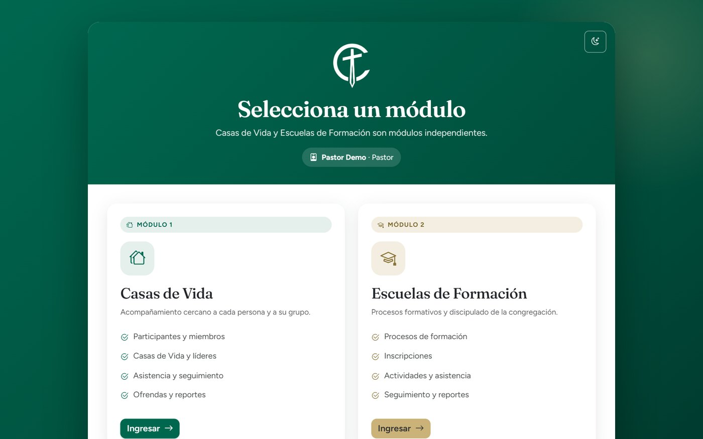
Figura 4. Selector de módulo del Pastor.
Panel principal
Todas las pantallas internas comparten la misma estructura:
Menú lateral (izquierda, verde): las secciones a las que su rol tiene acceso y, abajo, Cerrar sesión.
Barra superior: el módulo en el que está (por ejemplo, «Módulo Casas de Vida»), el botón de la luna para el modo oscuro y su nombre con su rol.
Aviso del reporte semanal (Líder y apoyo): dice si falta o ya se envió el reporte de la semana, con el botón para llenarlo.
Tarjetas de resumen: personas nuevas, Casas de Vida, asistentes por reunión y seguimientos abiertos (en Formación: procesos, inscritos y actividades).
Tablas recientes: últimos reportes de asistencia y seguimientos.
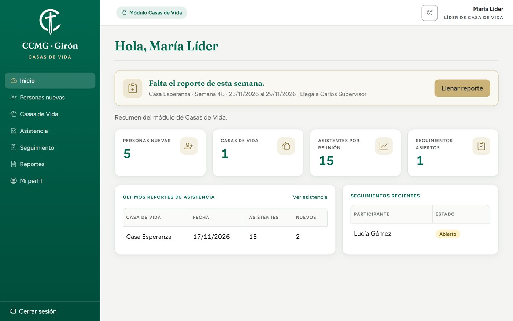
Figura 5. Panel del Líder de Casa de Vida, con el aviso «Falta el reporte de esta semana».
En el celular
En pantallas pequeñas el menú lateral se oculta y se abre con el botón de tres líneas de la esquina superior izquierda; la página pública muestra sus secciones en una barra inferior. Los formularios se adaptan al ancho del teléfono.
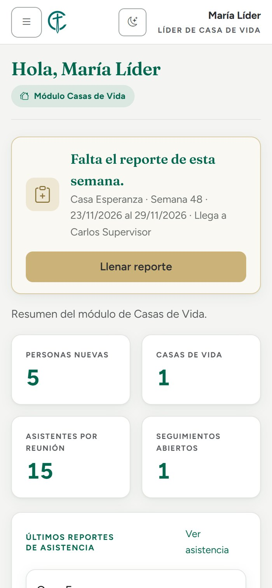
Figura 6. Panel del Líder en el celular.Figura 7. Página pública en el celular.
6.Tareas del Super Administrador
Quién: Super Administrador (el Pastor también puede gestionar usuarios). Dónde empezar: selector de módulo → Gestión de usuarios, o Usuarios en el menú lateral.
6.1 Crear un usuario
1
En «Gestión de usuarios», pulse Crear usuario.
2
Datos de la cuenta: llene Nombre completo y Correo electrónico. El Nombre de usuario es opcional; si se deja vacío, la persona entra con su correo.
3
Asignación: elija el Rol. Según el rol, la plataforma pide un dato más:
Supervisor de Área → Área que supervisa.
Líder de Casa de Vida → Casa de Vida.
Apoyo de Casa de Vida → Casa de Vida y Función de apoyo (Aprendiz, Anfitrión o Maestro de Niños).
Marque Autorizado como responsable de ofrendas solo si esa persona debe registrar ofrendas.
4
Contraseña: escríbala en Contraseña y Confirmar contraseña (mínimo 15 caracteres), o pulse Generar una contraseña segura. Deje marcado Pedir que la cambie al iniciar sesión por primera vez para que la persona ponga una propia.
5
Pulse Guardar.
Resultado: «Usuario creado correctamente.» y la cuenta aparece en la lista. Entregue la contraseña a la persona por un medio privado.
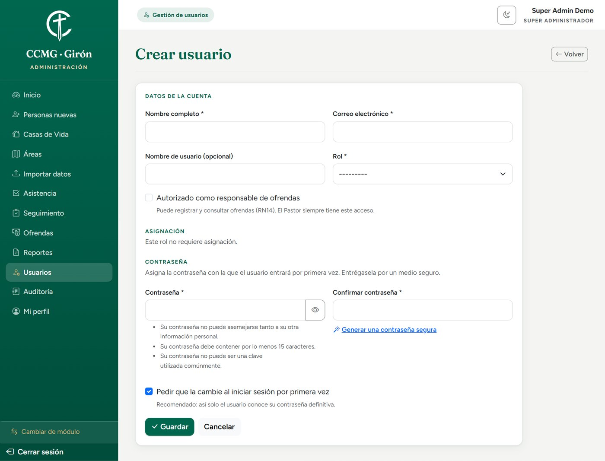
Figura 8. Formulario «Crear usuario» con sus tres secciones.
6.2 Editar, desactivar o reactivar un usuario
En la lista (columnas Nombre, Correo, Rol, Último acceso, Estado y Acciones) use Editar para cambiar sus datos o su rol; al guardar aparece «Usuario actualizado correctamente.».
Desactivar impide que la persona entre, sin borrar nada de lo que registró; aparece «Usuario desactivado correctamente.». Una cuenta inactiva se puede reactivar desde la misma lista («Usuario reactivado correctamente.»).
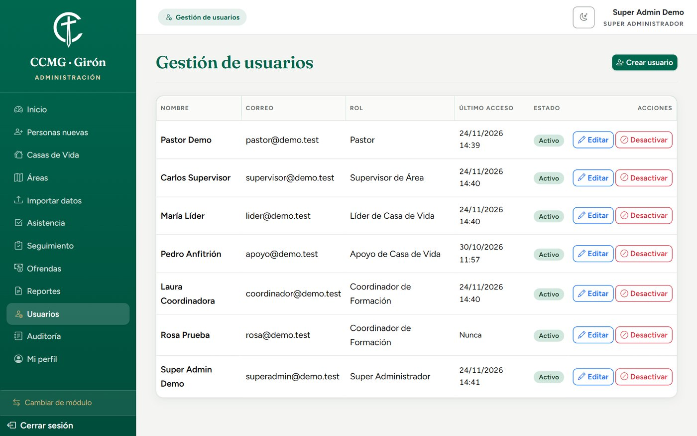
Figura 9. Gestión de usuarios.
6.3 Consultar la bitácora de auditoría
Abra Auditoría. La «Bitácora de auditoría» registra quién creó, modificó, desactivó, importó o envió información, y cuándo. Filtre por Usuario, Acción, Entidad, Desde y Hasta y pulse Filtrar. Con PDF o Excel descarga lo que está viendo.
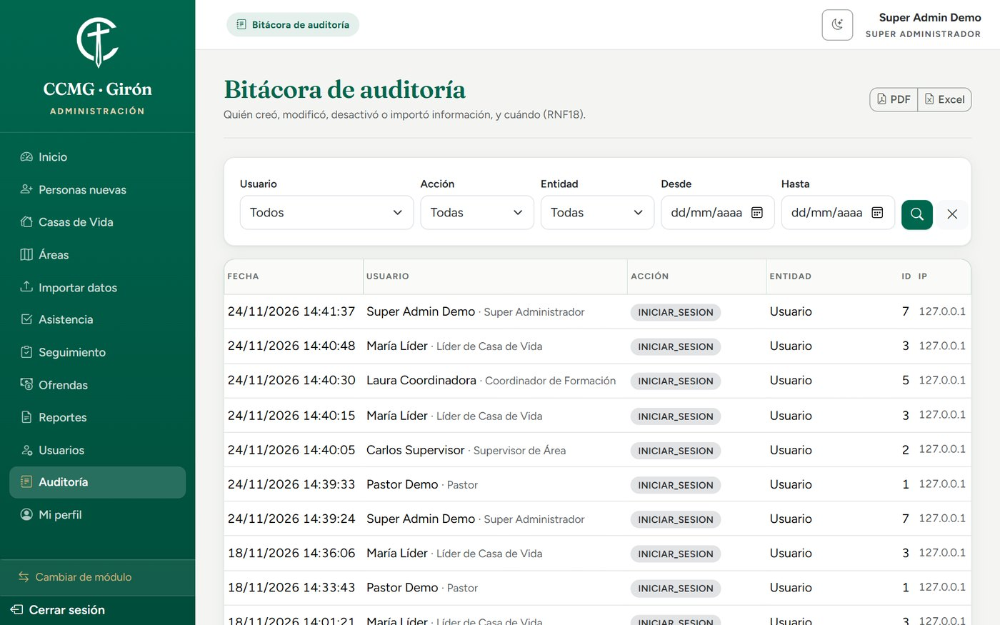
Figura 10. Bitácora de auditoría.
7.Tareas del Pastor
Quién: Pastor (y Super Administrador). Dónde empezar: selector de módulo → Casas de Vida → Ingresar. El panel muestra el resumen de toda la iglesia.
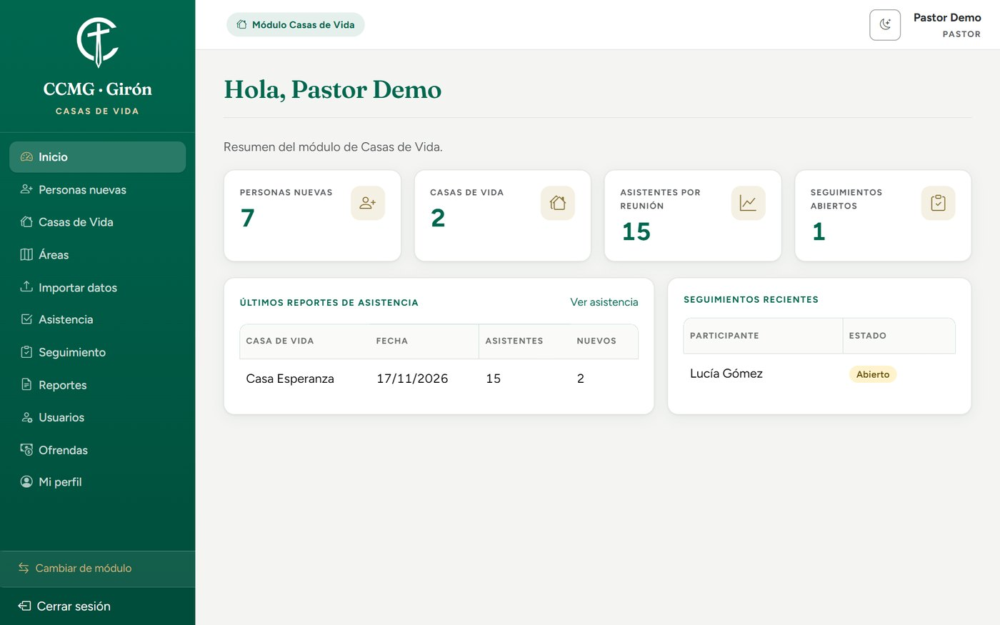
Figura 11. Panel del Pastor en el módulo Casas de Vida.
El orden recomendado al empezar a usar la plataforma es: 1) crear las Áreas, 2) crear las cuentas de los Supervisores y asignarles su Área, 3) crear las Casas de Vida, 4) crear las cuentas de Líderes y apoyo y asignarles su Casa.
7.1 Crear un Área
Abra Áreas y pulse Nueva Área. Escriba el Nombre del Área (ejemplo ficticio: «Área Norte»), elija el Supervisor de Área si ya tiene cuenta (es opcional) y pulse Guardar. Resultado: «Área creada correctamente.».
Cada Área agrupa Casas de Vida y tiene un único Supervisor; las Casas del Área heredan ese Supervisor. Solo las Casas de las Áreas R21 y ZONAR21 reportan la asistencia del culto del sábado.
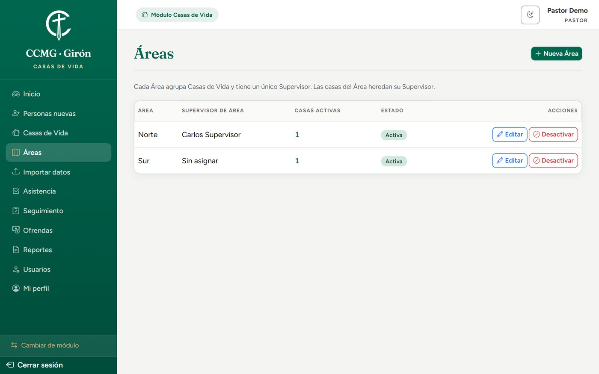
Figura 12. Lista de Áreas.
7.2 Crear y consultar Casas de Vida
1
Abra Casas de Vida y pulse Nueva Casa de Vida.
2
Llene Nombre de la Casa de Vida (ejemplo: «Casa Esperanza»), elija el Área y, si ya existe su cuenta, el Líder de Casa de Vida. La Dirección es opcional.
3
Pulse Guardar. Resultado: «Casa de Vida creada correctamente.».
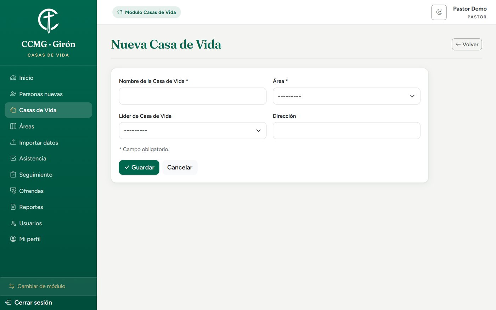
Figura 13. Formulario «Nueva Casa de Vida».
En la lista, Ver abre la ficha de la Casa: su información, sus personas nuevas y sus últimos reportes de asistencia. Editar cambia sus datos y Desactivar la retira sin borrar su historial. El equipo de apoyo de cada Casa se asigna desde la gestión de usuarios.
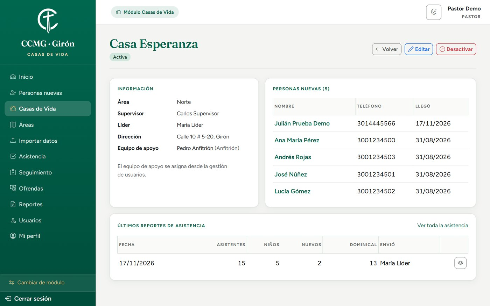
Figura 14. Ficha de una Casa de Vida.
7.3 Importar datos desde Excel o CSV
Sirve para cargar de una vez las Casas de Vida o los participantes que la iglesia ya tiene en hojas de cálculo.
1
Abra Importar datos y descargue la plantilla que corresponda: Plantilla de Casas de Vida o Plantilla de Participantes. Llénela sin cambiar la primera fila (los encabezados).
2
Elija qué va a importar (Casas de Vida o Participantes), seleccione el archivo en Archivo CSV o Excel (.xlsx) y pulse Revisar archivo.
3
La plataforma muestra una vista previa con las filas válidas y las que tienen errores; los errores se pueden descargar con Descargar detalle de errores. Si todo está bien, pulse Confirmar e importar; si no, Cambiar archivo.
Resultado: «Importación completada: N registros importados.».
Máximo 5 MB y 2.000 filas por archivo. Lo que ya existe se omite, no se duplica. Los participantes sin autorización de tratamiento de datos quedan con la autorización pendiente.
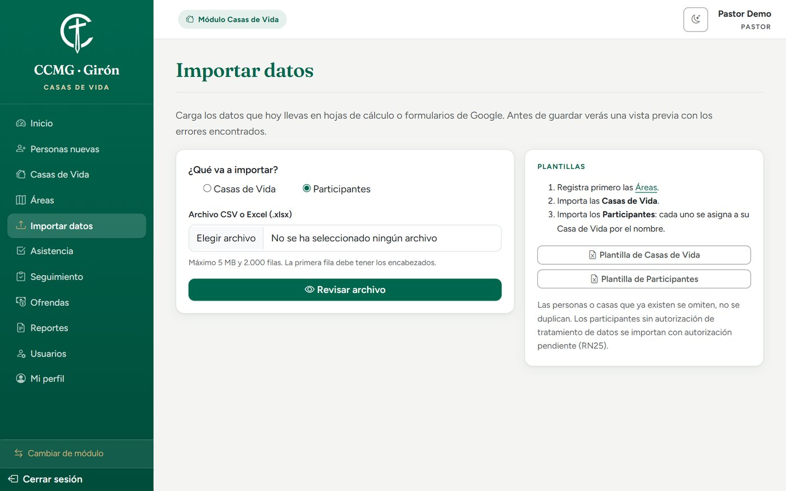
Figura 15. Importar datos.
7.4 Consultar personas nuevas y asistencia
Personas nuevas lista a quienes llegaron por primera vez a una Casa de Vida (nombre, teléfono, Casa, fecha de llegada y estado). Busque con Buscar, Casa de Vida y Estado y pulse Filtrar. El Pastor puede Ver, Editar o Desactivar a una persona.
Asistencia muestra los totales de cada reunión enviada por las Casas de Vida (asistentes, niños, nuevos, dominical y ofrenda), filtrables por Casa de Vida, Desde y Hasta. Ver abre el reporte completo.
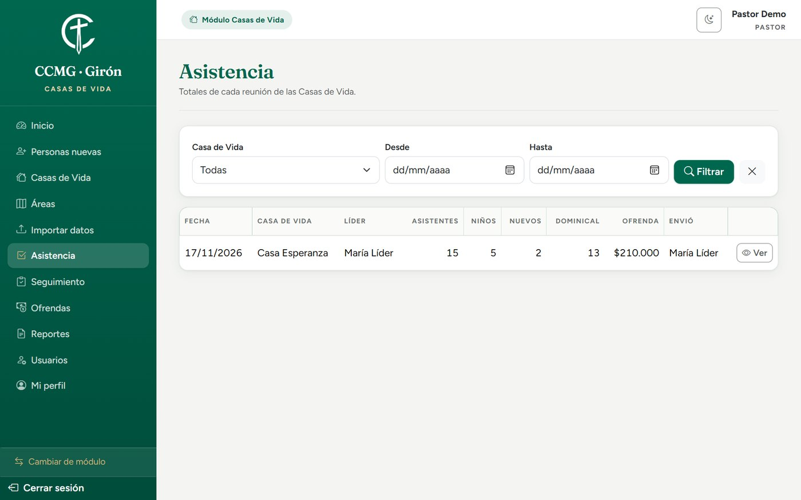
Figura 16. Asistencia de las Casas de Vida.
7.5 Registrar un seguimiento
El seguimiento deja constancia del acompañamiento a una persona: una visita, una llamada o una consejería.
1
Abra Seguimiento y pulse Nuevo seguimiento.
2
Elija el Participante, la Fecha, el Tipo (Visita, Llamada, Consejería u Otro) y el Estado (Abierto, En proceso o Cerrado), y escriba las Observaciones. Ejemplo ficticio: Lucía Gómez, Llamada, Abierto, «Se le invitó a la reunión del jueves».
Para actualizar el estado de un seguimiento existente, use Editar en la lista. En el módulo Casas de Vida solo el Pastor registra y edita seguimientos; el Supervisor y el Líder los consultan.
7.6 Generar y exportar reportes
En Reportes el Pastor ve los reportes generales recibidos de los Supervisores y los reportes semanales de las Casas de Vida.
1
Pulse Generar reporte.
2
Elija el Periodo (Semanal, Mensual o Anual) y una Fecha de referencia: se toma la semana, el mes o el año que contiene esa fecha. Si quiere, limite por Área o Casa de Vida.
3
Pulse Generar. Resultado: una tabla por Casa de Vida con reuniones, asistentes, niños, nuevos, conversiones, discípulos en escuelas, cultos, ofrenda, personas nuevas registradas, seguimientos y reportes enviados frente a los esperados.
4
Descargue el resultado con PDF o Excel.
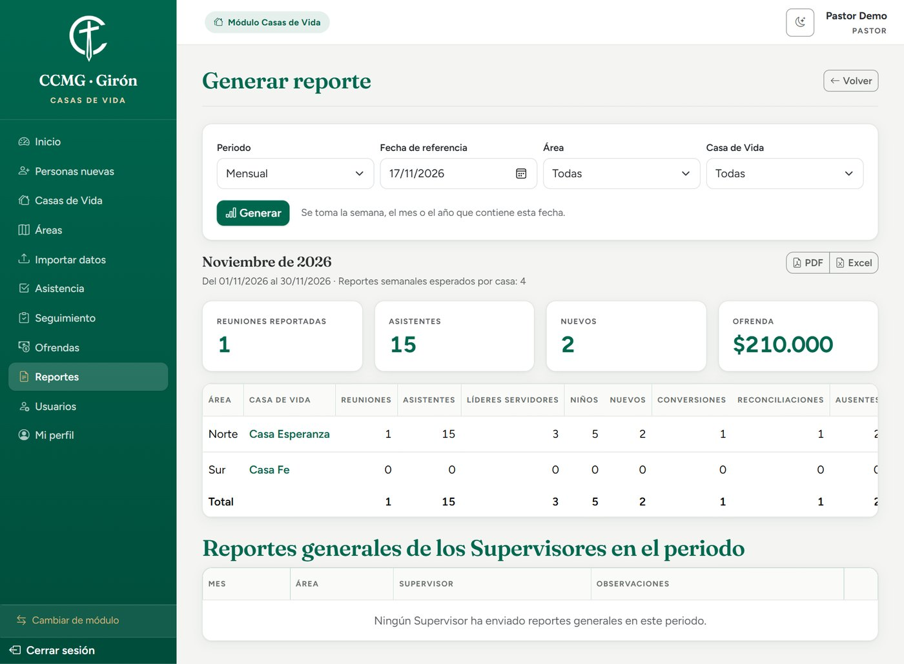
Figura 18. Reporte mensual generado.
7.7 Registrar ofrendas
Quién: el Pastor o una cuenta autorizada como responsable de ofrendas.
1
Abra Ofrendas y pulse Registrar ofrenda.
2
Llene Fecha, Concepto y Valor (COP); la Casa de Vida y las Observaciones son opcionales. Ejemplo ficticio: 17/11/2026, «Ofrenda culto dominical», 450.000.
La ofrenda que un Líder escribe en su reporte semanal se registra sola en este módulo, asociada a su Casa de Vida. La lista se filtra por concepto, fechas y Casa, y se descarga en PDF o Excel.
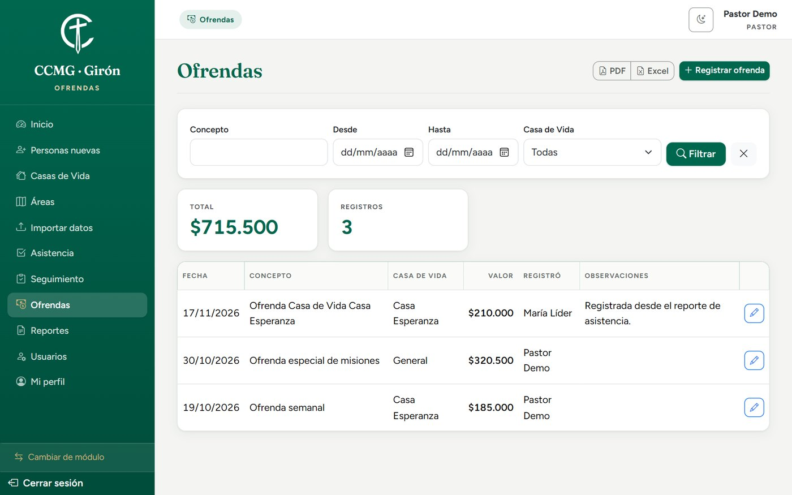
Figura 19. Módulo de Ofrendas.
8.Tareas del Supervisor de Área
Quién: Supervisor de Área. Dónde empezar: al iniciar sesión entra directo al panel de Casas de Vida, que muestra solo las Casas de su Área.
Revisar los reportes semanales
Abra Reportes. En «Reportes recibidos de las Casas de Vida» aparece cada reporte semanal que envían los Líderes, con la semana, la Casa y quién lo envió. Ver abre el reporte completo (asistencia, escuelas de formación, cultos e informe financiero), que puede descargarse en PDF o Excel.
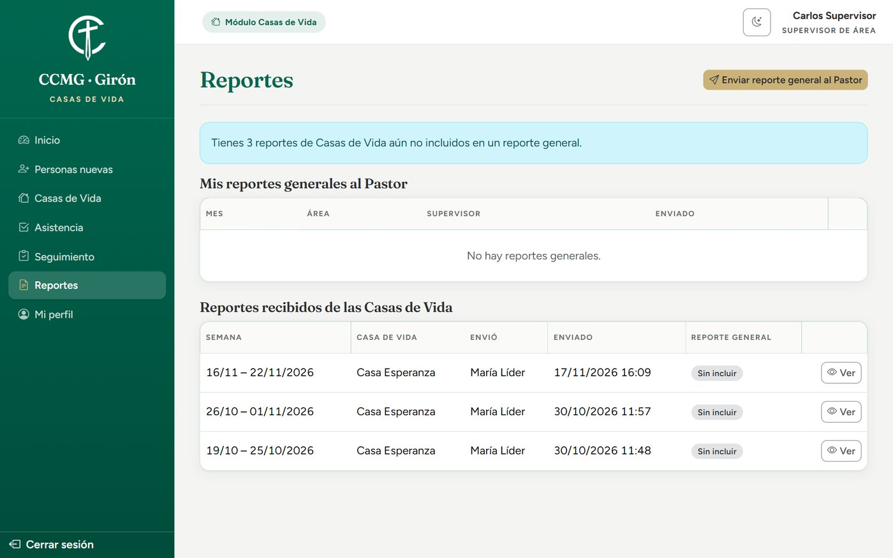
Figura 20. Reportes del Supervisor, con el aviso de reportes aún no incluidos en un reporte general.
Enviar el reporte general del mes al Pastor
1
En Reportes, pulse Enviar reporte general al Pastor.
2
Elija el Mes. La plataforma lista los reportes semanales de ese mes que aún no van en otro reporte general. Escriba las Observaciones generales (ejemplo ficticio: «Dos Casas crecieron en asistencia; Casa Esperanza necesita apoyo con niños»).
3
Pulse Enviar al Pastor. Resultado: «Reporte general de noviembre enviado al Pastor con N reportes de Casas de Vida.».
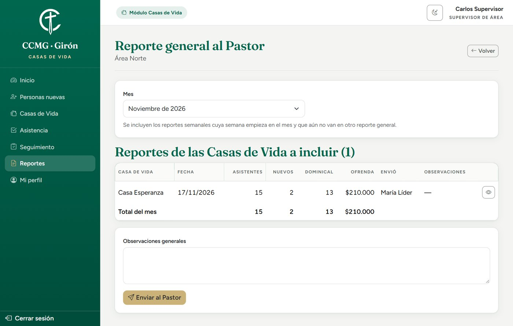
Figura 21. Reporte general al Pastor.
El Supervisor también consulta Personas nuevas, Asistencia y Seguimiento de su Área, con los mismos filtros descritos para el Pastor.
9.Tareas del Líder y del equipo de apoyo
Quién: Líder de Casa de Vida y Apoyo de Casa de Vida. Dónde empezar: al iniciar sesión entra al panel de su Casa de Vida. Arriba aparece el estado del reporte de la semana.
9.1 Llenar el reporte semanal de asistencia
Se llena uno por semana después de la reunión. Llega al Supervisor del Área de inmediato.
1
En el panel, pulse Llenar reporte (también está en Asistencia y en Reportes como Llenar reporte de asistencia).
2
Reunión: revise la Fecha de la reunión. El campo «Se envía a» muestra el Supervisor que lo recibirá.
3
Asistencia: escriba los totales en Asistentes, Asistencia niños y Asistencia nuevos.
4
Más de la reunión:Líderes servidores asistentes, Conversiones, Reconciliaciones y Ausentes.
5
Escuelas de Formación: cuántos discípulos de la Casa están en Pasos de Vida, Ciclo de Conexión, Módulo de Liderazgo y Seminario Bíblico. El total se calcula solo.
6
Cultos:Asistencia VEA y Asistencia dominical. El culto del sábado solo aparece para las Casas de las Áreas R21 y ZONAR21.
7
Informe financiero: escriba la Ofrenda (valor total); debajo aparece el valor en letras («Son $ …») para comprobarlo. Si quiere, deje Observaciones para el Supervisor.
8
Pulse Revisar y enviar al Supervisor. Se abre «Revisa antes de enviar» con el resumen; pulse Sí, enviar o Corregir algo para volver al formulario.
Resultado: «Reporte de asistencia del 17/11/2026 enviado al Supervisor de Área.» y se abre el reporte enviado. El aviso del panel cambia a reporte enviado. La ofrenda queda registrada en el módulo de Ofrendas.
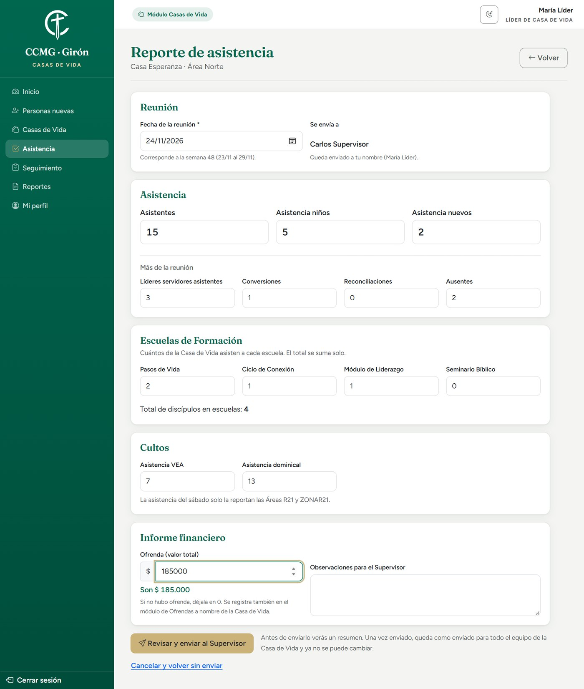
Figura 22. Reporte de asistencia con datos ficticios: 15 asistentes, 5 niños, 2 nuevos y $185.000 de ofrenda.
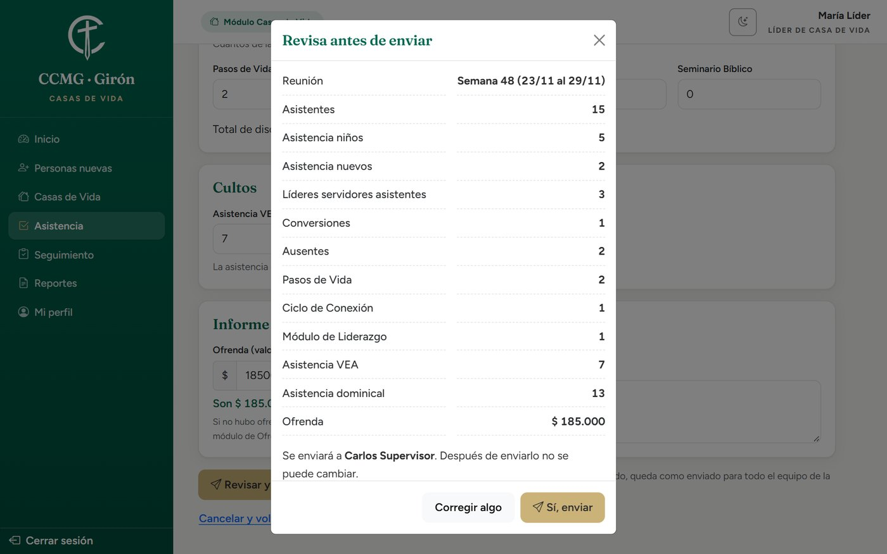
Figura 23. Ventana «Revisa antes de enviar».
Para salir sin enviar, use Cancelar y volver sin enviar. El reporte no se guarda como borrador: si sale, lo escrito se pierde.
9.2 Registrar una persona nueva
Cuando alguien llega por primera vez a la Casa de Vida se toman solo su nombre y su teléfono.
1
Abra Personas nuevas y pulse Registrar persona nueva · Casa Esperanza (aparece el nombre de su Casa).
2
Escriba el Nombre y el Número de teléfono. Ejemplo ficticio: Laura Gómez, 300 123 4567.
3
Pregunte a la persona si autoriza el uso de sus datos y, si dice que sí, marque Autorizó el tratamiento de sus datos personales (Ley 1581 de 2012).
4
Pulse Guardar. Resultado: «Se registró a Laura Gómez como persona nueva de Casa Esperanza.» y la persona aparece en la lista.
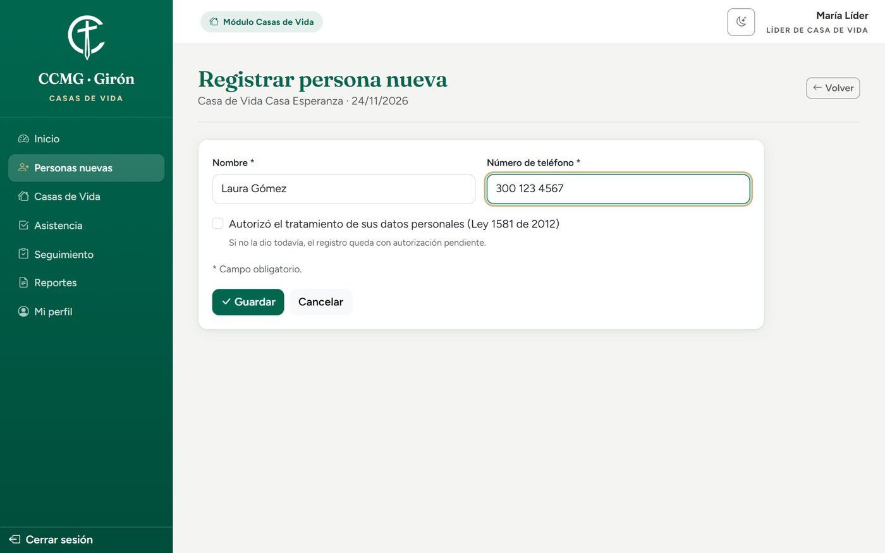
Figura 24. Registro de una persona nueva.
9.3 Consultar los reportes de la Casa de Vida
En Reportes («Reportes de mi Casa de Vida») están todos los reportes semanales enviados, con la semana, quién lo envió y cuándo. Ver abre cada uno. En Asistencia se ven los mismos datos como tabla de totales y en Seguimiento los seguimientos de las personas de su Casa.
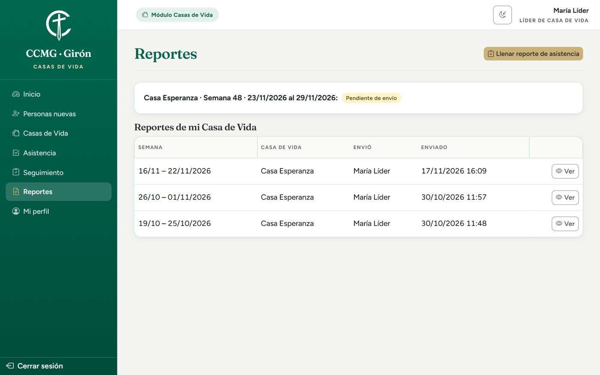
Figura 25. Reportes de la Casa de Vida.
10.Tareas del Coordinador de Formación
Quién: Coordinador de Formación (el Pastor y el Super Administrador también entran a este módulo desde el selector). Dónde empezar: al iniciar sesión entra al panel de Escuelas de Formación, con los procesos y las últimas actividades.
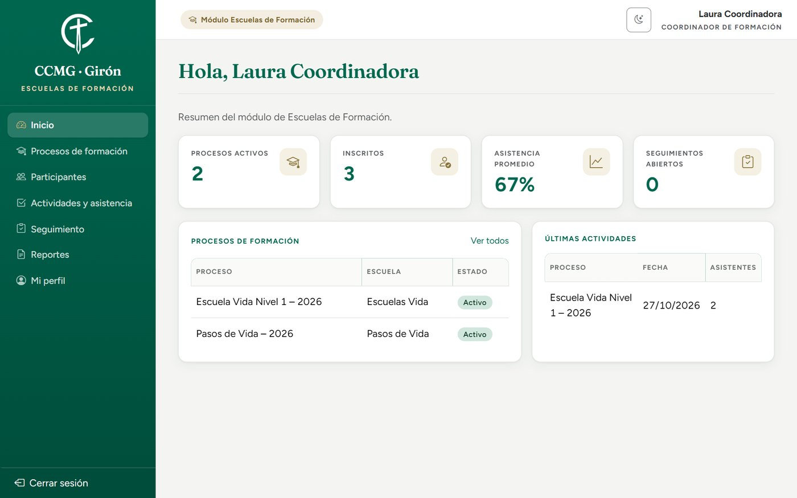
Figura 26. Panel del Coordinador de Formación.
10.1 Crear un proceso de formación
Abra Procesos de formación y pulse Nuevo proceso. Llene Nombre del proceso (ejemplo ficticio: «Escuela Vida Nivel 1 – 2026»), elija la Escuela y el Coordinador, escriba si quiere una Descripción y pulse Guardar. Resultado: «Proceso de formación creado correctamente.». La lista muestra cada proceso con su escuela, coordinador, inscritos, actividades y estado.
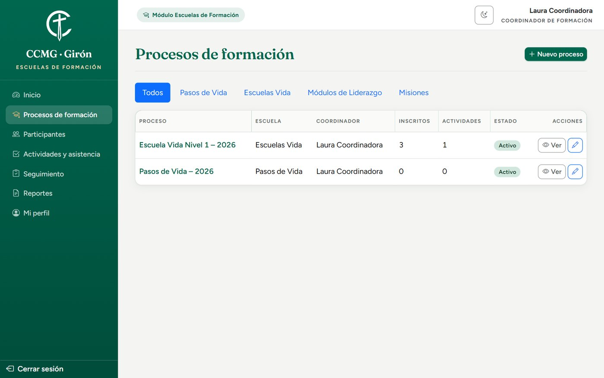
Figura 27. Procesos de formación.
10.2 Inscribir participantes
Desde la ficha del proceso (Ver) o desde Participantes hay dos caminos:
Inscribir existente: para alguien que ya está registrado. Se elige la persona y el proceso. Resultado: «Ana María Pérez inscrito en Escuela Vida Nivel 1 – 2026.».
Nuevo participante: para alguien que no está en la plataforma. Se llenan Nombres y apellidos, Documento de identidad, Fecha de nacimiento, Teléfono de contacto, Dirección, la autorización de datos (Ley 1581 de 2012) y el Proceso de formación. Si es menor de edad, autoriza su representante legal. Resultado: «… registrado e inscrito en …».
Para sacar a alguien de un proceso, use Retirar en la lista de inscritos de la ficha del proceso.
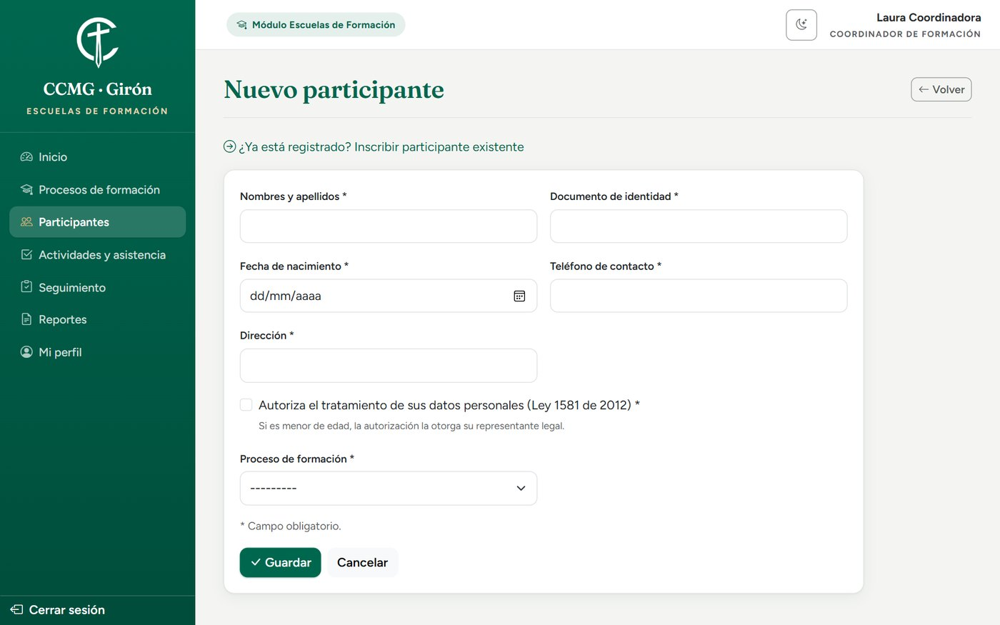
Figura 28. Formulario «Nuevo participante».
10.3 Registrar una actividad y su asistencia
1
Abra la ficha del proceso (Procesos de formación → Ver) y pulse Registrar actividad.
2
Escriba el Nombre de la actividad y la Fecha; la Descripción es opcional. Ejemplo ficticio: «Clase 3: La oración», 20/11/2026.
3
Marque los inscritos que asistieron. Marcar todos y Desmarcar todos agilizan grupos grandes.
4
Pulse Guardar. Resultado: «Actividad registrada: 2 de 3 presentes.».
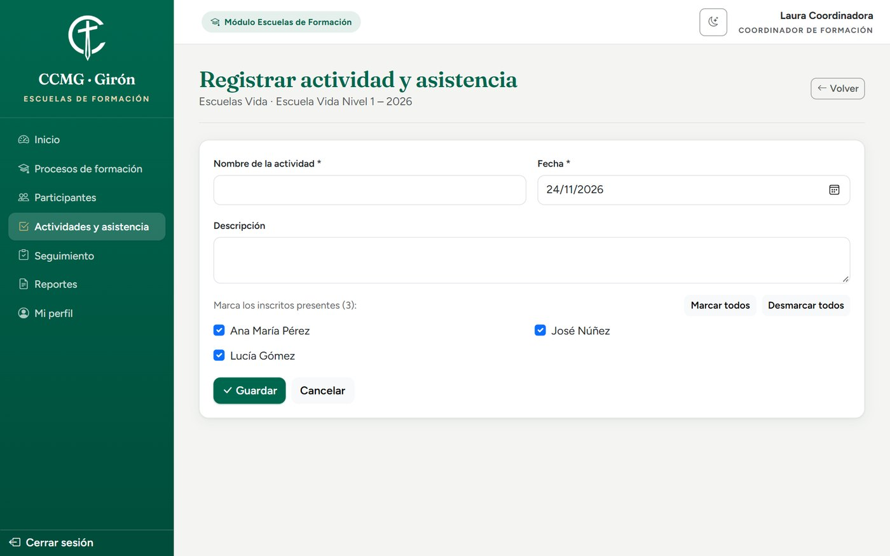
Figura 29. Registro de una actividad y su asistencia.
Actividades y asistencia lista todas las actividades registradas, filtrables por escuela, proceso y fechas. Las actividades nuevas se registran siempre desde su proceso.
10.4 Seguimiento y reportes de formación
Seguimiento: en Seguimiento o en la ficha del proceso, pulse Nuevo seguimiento, elija el participante y llene fecha, tipo, estado y observaciones, como en la sección 7.5. Resultado: «Seguimiento registrado correctamente.».
Reportes: en Reportes elija Periodo, Fecha de referencia y, si quiere, Escuela y Proceso; pulse Generar. La tabla muestra por proceso las actividades, presentes, porcentaje de asistencia, inscritos, nuevos y seguimientos. Se descarga con PDF o Excel.
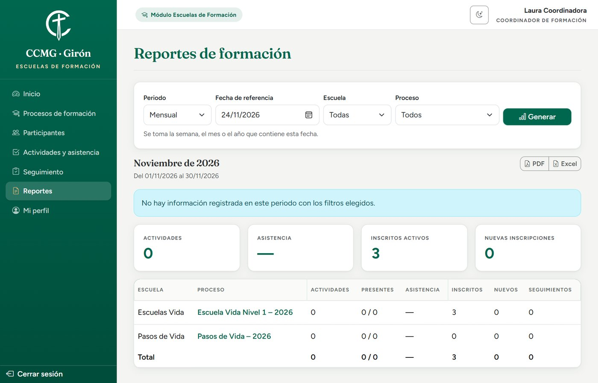
Figura 30. Reportes de formación.
11.Preguntas frecuentes
Olvidé mi contraseña. ¿Qué hago?
Use ¿Olvidaste tu contraseña? en la pantalla de inicio de sesión (sección 4). Si no le llega el correo, pida al administrador que le asigne una nueva desde Usuarios → Editar.
Escribo bien la contraseña y no me deja entrar.
Tras 5 intentos fallidos la cuenta se bloquea 15 minutos. Espere y vuelva a intentar. Si sigue igual, su cuenta puede estar desactivada: consulte al administrador.
Me equivoqué en un reporte de asistencia ya enviado. ¿Lo puedo corregir?
La plataforma no permite editar un reporte después de enviarlo. Avise a su Supervisor y escriba la aclaración en las observaciones del reporte siguiente [Por confirmar: procedimiento acordado con la iglesia para corregir reportes enviados].
No veo una opción que sí ve otra persona.
El menú depende del rol. Por ejemplo, solo el Pastor ve Áreas e Importar datos, y solo el Super Administrador ve Auditoría.
¿Por qué el Supervisor solo ve algunas Casas de Vida?
Cada Supervisor ve únicamente las Casas de su Área, y cada Líder solo la suya. Así cada responsable trabaja con la información que le corresponde.
¿Se pueden borrar personas, Casas o usuarios?
No se borran: se desactivan. Así se conserva el historial de reportes y seguimientos.
¿Puedo usar la plataforma desde el celular?
Sí, desde el navegador del teléfono. El reporte semanal y el registro de personas nuevas están pensados para llenarse ahí mismo, al terminar la reunión.
¿Cómo activo el modo oscuro?
Con el botón de la luna en la barra superior. La plataforma recuerda la elección en ese navegador.
Se me cerró la sesión mientras llenaba un formulario.
La sesión se cierra tras 30 minutos sin actividad. Vuelva a entrar y llene de nuevo el formulario; para reportes largos, tenga los datos a la mano antes de empezar.
12.Nota de verificación
Verificado usando el sistema
Entre el 23 y el 24/11/2026 se recorrió el entorno de demostración (puerto 8001) con una cuenta de cada rol: Super Administrador, Pastor, Supervisor de Área, Líder de Casa de Vida y Coordinador de Formación. Se capturaron 46 pantallas y se copiaron de ellas los nombres exactos de menús, botones, campos y columnas que aparecen en este manual.
Se llenó el reporte de asistencia con datos ficticios hasta la ventana «Revisa antes de enviar» y el formulario de persona nueva (Laura Gómez); ninguno de los dos se envió.
Inicio de sesión, selector de módulo, panel de cada rol, pantallas en el celular y la solicitud de recuperación de contraseña.
«Mi perfil» corregido: se guardó un nombre, se comprobó que seguía guardado al recargar y en las páginas generadas por el servidor, se probó el error con el nombre vacío y se abrió «Cambiar contraseña» desde el botón.
Verificado revisando el código
Mensajes de confirmación tras guardar (por ejemplo, «Usuario creado correctamente.» o «Reporte de asistencia del … enviado al Supervisor de Área.»).
Permisos de cada rol: quién registra seguimientos (Pastor en Casas de Vida), quién llena el reporte y registra personas nuevas (Líder y apoyo) y quién accede a Ofrendas.
Bloqueo tras 5 intentos durante 15 minutos, cierre de sesión tras 30 minutos de inactividad, vencimiento del enlace de recuperación en 60 minutos, mínimo de 15 caracteres en la contraseña y límites de la importación.
La cuenta de Apoyo de Casa de Vida no se recorrió en pantalla; sus permisos se tomaron del código.
Pendiente o no verificado
Dirección web definitiva y recepción real de los correos de recuperación (en la demostración los correos se muestran en la terminal del servidor).
Envío real de un reporte general del Supervisor y de una importación completa en esta revisión (sí están cubiertos por las pruebas automáticas del proyecto).
Procedimiento acordado con la iglesia para corregir un reporte ya enviado.
Diferencias entre lo implementado y los requisitos
Durante la revisión se encontró que Mi perfil no guardaba el nombre en la base de datos y que no había un enlace a «Cambiar contraseña». Ambas cosas se corrigieron el 24/11/2026: este manual ya describe el comportamiento corregido, que se probó en la demostración con los módulos Casas de Vida y Escuelas de Formación y se cubrió con 10 pruebas automáticas nuevas. La corrección todavía no tiene commit, así que no forma parte del commit d4b5cf7.
El reporte de asistencia se registra por totales y las personas nuevas solo con nombre y teléfono, como se acordó con la iglesia y se actualizó en la ERS; las Escuelas de Formación sí registran a cada participante con sus datos completos.